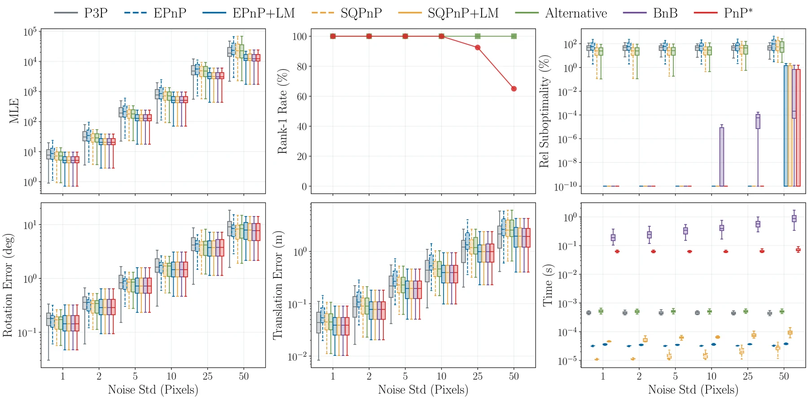
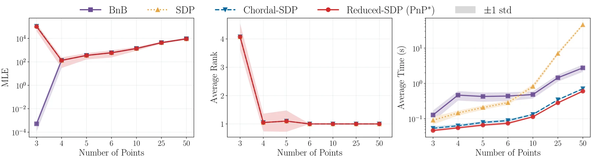

PnP*：对 MLE 目标可认证的全局最优 PnP 求解器
PnP*: A certifiable solver for Perspective-n-Point
核心是把“有理重投影 + SO(3) 约束”换成“带星形稀疏的 QCQP + 精确 SDP”：用 v=θ−π(z) 把有理项移到约束里，再把基提升到 [1,z,v⊗z] 让模型约束变线性、目标变 ‖y‖²，并用只涉及单点子变量的冗余约束保住稀疏；最后靠 chordal 分解（N=50 时比稠密 SDP 快约 65×）和商环约简（再快 12–18%）把问题压到可在笔记本上求解。N=6、σ≤10 px 时 40/40 次松弛精确，74 ms 一个带证书的解；代价是比 EPnP/SQPnP 这类局部解慢约三个数量级，且全部实验是合成数据、不含外点。
solve time @N=6
certified rate
rank-1 rate
chordal speedup
作者、单位与技术谱系 · Research context
作者与单位
研究脉络
- Cifuentes (2021) 相机重定标的稳定松弛直接前作关系：本文松弛在其基础上加入旋转约束；加入后可行集改变，稳定性不再自动成立，必须重新验证。[论文 §2.2]
- Rosen et al. (2019) 位姿图优化的可认证求解 / Eriksson et al. (2018) 旋转平均方法基座关系：同一套“非凸 QCQP → SDP 松弛 → 精确性判定”的框架，已在位姿图、旋转平均、点云配准上成立。[论文 §2.2]
- Tron et al. (2015) / Briales & Gonzalez-Jimenez (2017) 的旋转约束二次化组件关系：提供把 SO(3) 写成二次约束的两种写法，本文选 20 条线性无关版本以利于松弛。[论文 §4.1]
- 本篇推进本篇推进关系：首次对 PnP 的 MLE 给出松弛稳定性证明，并把松弛做到多项式时间可解。[论文 §1 贡献]
作者单位与角色均取自论文首页署名块；“同一框架谱系”的判断来自论文 §2.2 的自述与前作引用，属于有来源的解读；论文没有披露导师关系，此处不做推断。
方法本质拆解 · What actually changed
是不是微调？
不是，而且完全不涉及训练。这是纯优化与数值方法：没有网络权重、没有数据集、没有梯度下降，全部“参数”都是数学构造（辅助变量、提升基、冗余约束）。因此它的复现不依赖算力，只依赖 SDP 求解器与稀疏结构的实现是否正确。
有没有额外约束？
新约束有三类：辅助变量定义 v=θ−π(z) 的模型约束、20 条旋转二次约束、以及用于保住稀疏的提升/冗余约束与归一化 ‖z‖²=1。隐含的硬前提是 Assumption 1（N≥6、无临界构型）与高斯噪声、无外点；这两个前提一破，证书就不再成立，而不是精度下降。
推理/后端到底做了什么？
每次求解一次 SDP（MOSEK 内点法），检查解矩阵是否 rank-1：是则直接分解得到位姿与证书；否则回退到 LM 精化，并用对偶界给出该解的相对次优程度。没有迭代式全局搜索、没有 BnB、没有 RANSAC 内循环，所以它不是“更快的全局搜索”，而是“一次凸求解换掉指数搜索”。
方法本质是什么？
本质是把“有理重投影 + 非凸 SO(3)”翻译成“带星形稀疏的 QCQP”，再用精确 SDP 把它变成凸问题；chordal 分解与商环约简不改变解，只把矩阵规模压到可解。它改变的不确定性是“这个位姿离全局最优有多远”——从不可知变成有界可证。它没有做的是外点剔除与退化检测，这两件事仍留给前端。
输入 3D-2D 对应 + 已知内参 + N≥6 且无外点的假设；把目标提升到 y=v⊗z 后构造稀疏 SDP；一次凸求解 + rank-1 判定输出位姿与全局最优证书；直接效果是 74 ms 内可证明的最优位姿。

结论与问题Conclusion & Motivation
核心结论
PnP* 是第一个在多项式时间内直接优化 PnP 真实 MLE、并给出全局最优证书的求解器。它把有理重投影目标改写成只引入必要辅助变量的 QCQP，用保持星形稀疏的冗余约束构造半正定松弛，再以 chordal 分解和商环约简把松弛降到可解规模。N=6 的最小配置下平均 74 ms 得到一个带证书的解（>10 Hz，M4 MacBook Air 16GB + MOSEK），σ≤10 px 的噪声范围内 40 次 Monte Carlo 全部 rank-1。代价同样明确：比局部非最小求解器慢约三个数量级，实验全部是合成数据，且不含任何外点处理。
动机与问题
论文把现有 PnP 方法分成四类并逐一点出缺陷（Table 1）：最小解（P3P 等）用固定 3 个点，无法平噪，还要额外决定选哪些点；非最小解（EPnP、SQPnP）把重投影误差换成加权重投影或点到线误差，解的是“另一个目标”；已有的可认证解（Sun & Deng 2020）认证的也是替代误差；分支定界（BnB）虽然直接优化 MLE，但最坏情况下是指数时间，而且需要对平移的先验边界才能把搜索空间变紧。因此“对真实 MLE 的多项式时间可认证求解器”一直是空缺，而它的缺失意味着 SLAM 前端拿到的位姿无法判断是否已到全局最优。
方法Method
方法总览
四步构造。第一步引入辅助变量 v_i=θ_i−π_i(z)，目标变成 ‖v‖²，把有理项移进约束 m_{θ,i}(z,v)=0；第二步把旋转约束写成 20 条线性无关的二次约束（用 RRᵀ=I₃ 的冗余形式，比 15 条版本更适合松弛）；第三步把基从 [1,z,v] 提升到 [1,z,v⊗z]，令 y=v⊗z，模型约束对 x=(h,z,y) 变成线性、目标变成 ‖y‖²，并只对单点子变量 x^(i)=(h,z,y_i) 乘冗余约束以保住星形稀疏；第四步对这个 SDP 做 chordal 分解，再用商环约简降维，得到等价的 Reduced-SDP。
关键技术细节
最要紧的技术判断是：朴素的 Shor 松弛对这个问题“没有信息”——模型约束是 v 与 z 的双线性项，目标只含 ‖v‖²，松弛可以把两者解耦，于是最优值恒为 0（论文引 Cifuentes 2021 的 Lemma 3.1 说明这一点）。提升到 y=v⊗z 并加冗余约束才让松弛有内容。稳定性证明走的是 Cifuentes 等（2022）的稳定性条件，配合 Assumption 1（N≥6，且世界点与真值相机中心不落在 camera resectioning 的临界集上）保证无噪声时最优解唯一；求解用 MOSEK，rank 判定阈值 1e-5。若松弛不精确，算法回退到 LM 精化，证书退化为“该解距全局最优不超过某个界”，而不是直接失败。

实验Experiments
实验设置
全部是合成 Monte Carlo，每个配置 40 次；硬件是 M4 MacBook Air、16 GB 内存，SDP 用 MOSEK。稳定性实验固定 N=6（保证唯一解的最小配置），内参 f=800、主点 (320,240)、640×480 图像，2D 测量均匀采样后按 [5,35] 的深度反投影成 3D 点，再按标准差 σ 加高斯噪声扫 σ。对照包括 P3P（穷举全部 3 点子集并取最小重投影）、EPnP 与 SQPnP（各带/不带 LM 精化）、Alternative（Sun & Deng 的加权重投影可认证解）以及 BnB（相对次优容差 1e-4）。指标是 MLE 目标值、rank-1 比例、相对次优界、旋转/平移误差与耗时。
实验数字与比较
精确性与秩：σ 到 10 px 时所有运行都是 rank-1，松弛精确；rank-1 比例在 N=6 为 40/40、N=5 为 37/40、N=4 为 39/40，与 Assumption 1 要求的 N≥6 一致。目标值：P3P 即使穷举 3 点子集也从未达到 MLE 最优；SQPnP 与 Alternative 的曲线完全重合，因为二者优化同一个加权重投影误差；LM 精化在所有运行里经验上都到达全局最优，PnP* 的作用是给出这一点的证书，而不只是复现它。速度：N=6 时 Reduced-SDP 平均 74 ms（>10 Hz）；chordal 分解在 N=10 比稠密 SDP 快 6×、N=50 快约 65×；商环约简在此基础上再快 12–18%；整体比 BnB 快 3–8×；但比局部非最小解慢约三个数量级。
消融/失败边界
论文没有传统的“去掉某模块”消融，替代它的是三种松弛形式的对照：dense (SDP)、Chordal-SDP、Reduced-SDP 在每次运行里给出相同解，差别只在时间——去掉 chordal 分解，N=50 时慢约 65×；再去掉商环约简，还要再慢 12–18%。这就是“可扩展性来自哪里”的直接证据。失败边界写得很清楚：N=3 时松弛虽然tight 但不 exact（P3P 最多有 4 个精确解），内点法返回凸组合，解提取会失败，作者观察到少数实例违反 h≠0；N<6 无唯一性保证；σ>10 px 松弛不再精确，只能靠 LM 回退 + 近最优界；整个框架假设高斯噪声、没有外点。
局限与迁移Limitations & Transfer
局限与待核验
作者明确承认的局限是：外点鲁棒性尚未纳入（结论里直接写成 future work），并且把扩展到相机标定与 bundle adjustment 列为方向——也就是说它现在不能替代 RANSAC+PnP 前端，只能在内点集已知时做全局校验。我们待核验的：真实数据（ETH3D、自采序列）上带外点时证书是否还有意义；N 到几十/上百时的绝对耗时（正文只给到 N=50 的相对曲线，没有逐点数值表）；74 ms 依赖 MOSEK 商业求解器与笔记本 CPU，嵌入式或实时前端能否移植未知；仓库已有代码，但没有 ROS/实时集成与失败案例报告。
与你研究路线的关系
可迁移的是“给已有估计器加证书”的位置，而不是替换求解器：我们的 PnP/RANSAC 前端可以在固定内点集上调用 PnP* 做一次全局校验，输出“当前位姿是否已是全局最优、次优界是多少”，把不可解释的位姿跳变变成可诊断的失败类型（局部极小 / 外点污染 / 退化）。下一步实验：在一段真实序列的每个关键帧上，取 RANSAC 内点集分别跑 LM 与 PnP*，只比较两者 MLE 目标值之差与 rank-1 比例，不追求速度；如果 ΔMLE 长期小于 1e-4，说明后端瓶颈不在 PnP 局部极小，而在外点剔除或几何退化，那时应把精力放回鲁棒核与可观测性分析。

